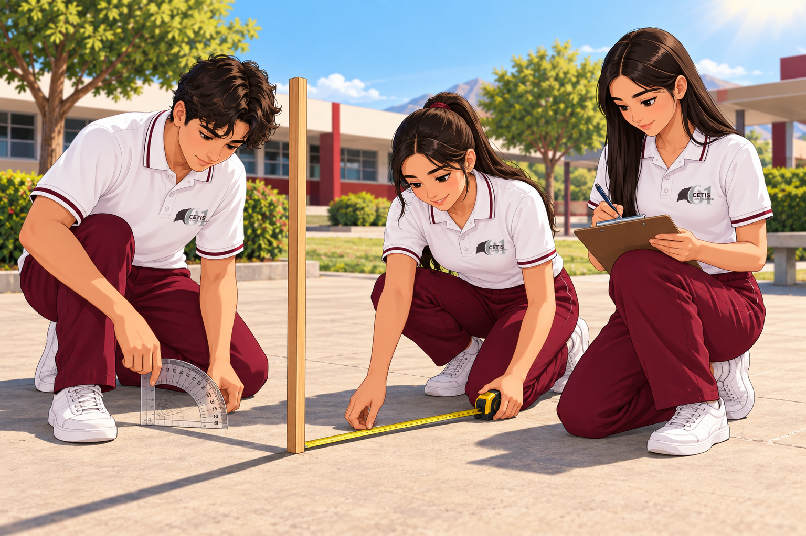

Diagnóstico · ¿Podemos medir lo que no podemos alcanzar?
Identifica tu punto de partida en medición, geometría, selección de estrategias y argumentación.
Pregunta guía: ¿Cómo determinarías la altura de una estructura sin medirla directamente?

LA PROFE ARGELIA TE RECUERDA:
Antes de buscar una fórmula, identifica qué observas, qué conoces y qué necesitas descubrir.
Antes de buscar una fórmula, identifica qué observas, qué conoces y qué necesitas descubrir.
1 · Reto inicial○ Pendiente

Imagina una estructura alta del plantel. Dibuja o describe una estrategia para conocer su altura sin subir a ella.
2 · Estación A · Mido y convierto○ Pendiente
3.5 m equivalen a:
3 · Estación B · Triángulos○ Pendiente
Un triángulo rectángulo tiene catetos de 6 m y 8 m. ¿Cuánto mide la hipotenusa?
Explica cómo lo pensaste.
4 · Estación C · Elige la herramienta○ Pendiente
Selecciona la herramienta matemática adecuada para la diagonal de un rectángulo.
5 · Cierre de la ficha○ Pendiente
Vuelve a la pregunta guía: ¿Cómo determinarías la altura de una estructura sin medirla directamente?
Conexión: Esta respuesta queda como evidencia abierta y se conserva para que puedas continuar después.